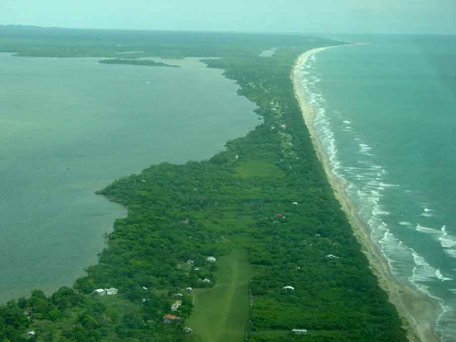
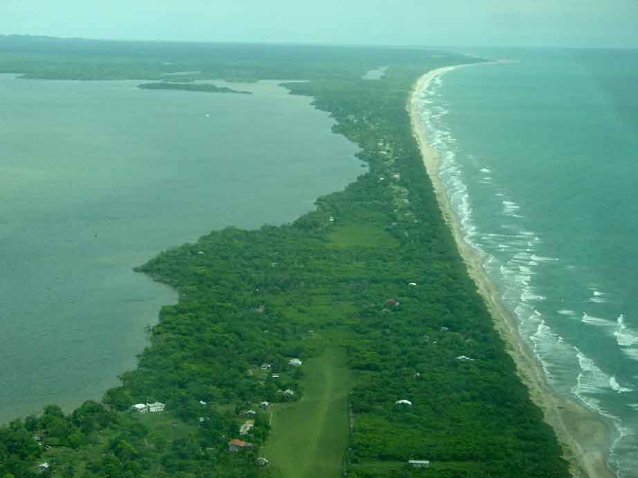
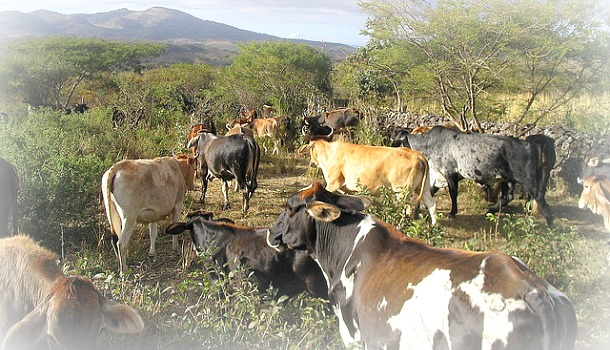

La reserva ha sido declarada Patrimonio de la Humanidad y Reserva de la Biosfera por la Unesco, en el año 1981. Y si se incluye con la Reserva de la Biosfera Bosawás en Nicaragua que geográficamente son una sola selva, se posicionaria como la segunda selva más grande del hemisferio occidental con más de 33,740 km, después de la selva amazónica en Brasil. Incluso ha participado como una de las siete Maravillas naturales del planeta, además de representar el 7% de la superficie de Honduras, las recientes investigaciones confirmaron que hay 3 veces más animales por hectárea cuadrada más que en la amazónia, convirtiéndose en la selva más densamente poblada del continente.
Consta con más de la mitad de los mamíferos conocidos en Honduras, algunas especies mamíferos como lo son: Monos Capuchinos, pecaríes, venados, Tapir o Danto, Perezosos, Oso hormiguero gigante, tigrillo o gato de monte, Jaguar, Pantera negra, entre otros. Se repotaron 511 especies de ves como: tucán y Guacamayo rojo y Verde, Águila Harpía, Hocco major, el águila crestada. Mamíferos acuáticos como Manatí. Hay cerca de 110 especies de reptiles y anfibios como tortugas marinas como terrestres, pitones, anacondas entre otros.
Posee árboles de más de 50 metros de alto y 69 sitios arqueológicos los cuales ayudaron a descubrir la Ciudad Blanca. en 2018 se documentado unas 586 especies de plantas vasculares en las tierras bajas de la reserva. Las condiciones climáticas y la falta de referencias hace que la investigación de la reserva sea complicado, por lo que se desconoce del número de especies en el área, así como de los sitios arqueológicos de las civilizaciones que habitaban allí.
También da lugar a la «Ciudad Blanca» una ciudad de una civilización muy antigua aún desconocida, pese a los esfuerzos la ciudad tardara un tiempo aproximado de 50 años para su descubrimiento. Lo que intriga a muchos es que la ciudad pasó desapercibida por tantos años. Se estima su tamaño de 50 km cuadrados. Solo se habían registrado leyendas de un grupo étnico llamado. Esta ciudad fue descubierta el año 2012 por las equipos de investigación de National Geographic y The Explorers en cooperación con los centros de conservación de Honduras.
Población.
La reserva de la biosfera de Río Plátano es habitada por al menos 2000 indígenas que siguen viviendo de su modo tradicional. Estos grupos étnicos del país mantiene la agricultura y la ganadería en la zona, siendo su principal fuente de sostenimiento ambiental.
Problemas.
En el año 1980 contaba con una extensión de 18,836 km², pero fue diezmado por los Taladores y campesinos ilegales, por lo que en el año 1996 habiendo perdido más de la mitad de sus zonas selváticas, la reserva pasó a la categoría de en peligro, que le fue retirada en el año 2007. Sin embargo, sus valores ambientales y culturales son amenazados por, una pobre gestión ambiental, la colonización para roturar nuevos terrenos agrícolas, la ganadería ilegal y descontrolada y las talas ilegales.
Estas causas, hicieron que el Gobierno de Honduras pidiera su inclusión por segunda vez a la lista de Patrimonio de la Humanidad en peligro en el año 2011.

Existe, así mismo, un proyecto de central hidroeléctrica.